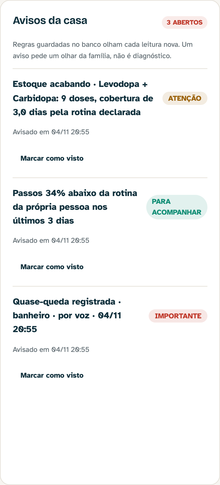
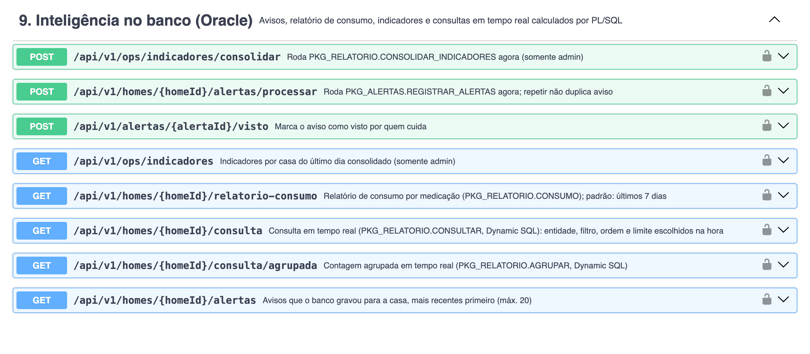

Documentação do projeto · Fase 7
O PL/SQL do AURA consolidado em packages, com triggers e Dynamic SQL, e uma esteira que testa, publica e implanta o back-end sobre Oracle
AURA · Assistente Ubíquo de Resposta Ativa
Smart HAS · Enterprise Challenge 2026 (mentoria Leroy Merlin) · FIAP
| Nome completo | RM | Papel |
|---|---|---|
| Vinícius Miranda Baptista | 555081 | Tech Lead |
| João Domingos Góes Filho | 564465 | Dev Senior Mobile |
| Pedro Henrique Arenas Negri | 554971 | Dev Pleno |
| Júlia Alves Dias | 557151 | Infra |
| Entregável | Onde |
|---|---|
| Código-fonte | github.com/AuraSmartHAS/aura, branch main (também na pasta codigo-fonte/ do ZIP) |
| Vídeo de até 5 min (YouTube, não listado) | «inserir link do YouTube (não listado)» |
| Apresentação (10 slides) | AURA - Apresentacao Fase 7.pdf |
| Esteira de entrega (GitHub Actions) | github.com/AuraSmartHAS/aura/actions/workflows/entrega-oracle.yml |
| Scripts do banco (DDL, packages, triggers, carga, consultas) | banco-oracle/ no ZIP · database/oracle/ e backend-spring/src/main/resources/db/migration/oracle/ no repositório |
O AURA acompanha idosos em casa por voz e pulseira e ajuda a família a cuidar da casa antes que falte alguma coisa. A Maria, 74 anos, com Parkinson, fala com o app; a Ana, a filha, acompanha pelo painel e aprova toda compra. Na Fase 6 o mesmo back-end Spring Boot passou a rodar sobre Oracle, e o banco ganhou nove rotinas PL/SQL que medem adesão ao remédio, percebem mudança de rotina e gravam avisos para a família.
A Fase 7 profissionaliza essa camada em duas frentes. No banco, as nove rotinas soltas viram cinco packages, entram duas triggers (uma de auditoria, uma de automação) e uma consulta em tempo real com Dynamic SQL. Na entrega, uma esteira no GitHub Actions compila, testa contra Oracle de verdade, publica a imagem da API e a implanta com um Oracle efêmero, conferindo o PL/SQL dentro do banco e o comportamento pela API, com logs e relatório de cada execução.
As duas frentes se encontram na conversa da Maria. O app dela tem um agente de voz de IA generativa
(ElevenLabs) com ferramentas que agem na API: quando ela diz "tomei a levodopa", a ferramenta
confirm_medication confirma a dose, o estoque desce, e se o remédio começar a acabar a trigger desta fase
grava o aviso que a Ana vê no painel. O agente conversa; quem decide se há aviso são as regras versionadas do banco.
| Pedido do enunciado | Como foi atendido |
|---|---|
| Agrupar procedures e functions em packages | As nove rotinas da Fase 6 em PKG_APOIO, PKG_LEITURA, PKG_MEDICACAO, PKG_ALERTAS e PKG_RELATORIO (§2.1). Nenhuma function ou procedure ficou solta. |
| Pelo menos uma trigger de auditoria ou automação | Duas: TRG_REGRA_ALERTA_AUDITORIA registra toda mudança num limiar de aviso (§2.3); TRG_MEDICACAO_ESTOQUE_BAIXO transforma em aviso, na hora, a dose que deixa o remédio acabando (§2.4). |
| Dynamic SQL para consultas em tempo real | PKG_RELATORIO.CONSULTAR e AGRUPAR: entidade, filtro, ordem e agrupamento escolhidos na hora, com lista branca, dicionário de dados e bind (§2.5). |
| Documentar todos os objetos | §2.2: finalidade e valor agregado de cada package, rotina, trigger e tabela nova. |
| Pipeline com build e testes automatizados | Job build-e-testes do workflow entrega-oracle.yml: suíte inteira, inclusive contra Oracle e PostgreSQL em contêiner (§3.2). |
| Deploy automatizado do back-end + integração com Oracle | Jobs imagem e deploy: imagem no GitHub Container Registry, implantada com Oracle Free; o Flyway cria tabelas, packages e triggers e o job confere tudo dentro do banco (§3.3). |
| Logs e relatórios de execução | Artefatos relatorio-testes e logs-deploy; resumo de cada run com testes, migrations, objetos PL/SQL e o smoke (§3.4). |
Na Fase 6 cada rotina era um objeto independente no schema. Funcionava, mas qualquer pessoa com acesso ao banco via nove nomes sem relação entre si, e nada separava o que é contrato (o que o Java chama) do que é detalhe de implementação. O package resolve as duas coisas: a especificação é o contrato, com a documentação de cada rotina, e o corpo guarda a implementação e as rotinas privadas. As regras de negócio não mudaram uma linha; mudaram de casa.
| Package | Na Fase 6 | Na Fase 7 |
|---|---|---|
| PKG_APOIO | PRC_LOG_ERRO, FN_UUID_TEXTO | LOG_ERRO, UUID_TEXTO |
| PKG_LEITURA | FN_DESCREVER_LEITURA, FN_VARIACAO_ROTINA | DESCREVER, VARIACAO_ROTINA |
| PKG_MEDICACAO | FN_DOSES_ESPERADAS, FN_TAXA_ADESAO | DOSES_ESPERADAS, TAXA_ADESAO + novas DOSES_POR_DIA e DIAS_COBERTURA |
| PKG_ALERTAS | PRC_REGISTRAR_ALERTAS | REGISTRAR_ALERTAS + nova AVISAR_ESTOQUE e a privada GRAVAR |
| PKG_RELATORIO | PRC_RELATORIO_CONSUMO, PRC_CONSOLIDAR_INDICADORES | CONSUMO, CONSOLIDAR_INDICADORES + novas CONSULTAR e AGRUPAR (Dynamic SQL) |
A migração é versionada como o resto do schema. A V3__consolidacao_plsql.sql apaga as rotinas soltas
(só se existirem, então serve para banco novo e para banco que já tinha a Fase 6), cria a tabela de auditoria e
cadastra a regra nova. Os packages e as triggers moram nas repetíveis R__01 a R__04,
que o Flyway reaplica sempre que o arquivo muda. Do lado do Java, o adaptador OracleCareIntelligence
passou a chamar, por exemplo, PKG_ALERTAS.REGISTRAR_ALERTAS no lugar de
PRC_REGISTRAR_ALERTAS; as rotas, o painel e os apps não perceberam a troca.
| Objeto | Finalidade | Valor agregado ao sistema |
|---|---|---|
| PKG_APOIO package | LOG_ERRO grava falhas em transação autônoma; UUID_TEXTO converte o RAW(16) do Hibernate no UUID que o Java grava dentro do JSON. | O erro de uma rotina sobrevive ao rollback de quem falhou, e coluna e JSON conversam no mesmo formato. |
| PKG_LEITURA package | DESCREVER transforma a leitura crua em frase ("Quase-queda registrada · banheiro · por voz · 04/11 14:32"); VARIACAO_ROTINA compara a pulseira com a rotina da própria pessoa. | O aviso que a Ana lê sai pronto do banco, sem jargão nem verbo de dose; a mudança de rotina não depende de faixa clínica. |
| PKG_MEDICACAO package | TAXA_ADESAO e DOSES_ESPERADAS medem adesão pela rotina declarada; DIAS_COBERTURA diz por quantos dias o estoque cobre essa rotina. | Uma régua só para adesão e estoque, usada pelo painel, pelo relatório e pela trigger. |
| PKG_ALERTAS package | REGISTRAR_ALERTAS percorre as regras ativas e grava avisos; AVISAR_ESTOQUE grava o aviso de estoque quando a trigger pede. | Toda gravação em ALERTA passa por um lugar só, com a mesma deduplicação e o mesmo guardrail de texto. |
| PKG_RELATORIO package | CONSUMO (relatório por remédio), CONSOLIDAR_INDICADORES (lote diário) e CONSULTAR/AGRUPAR (consulta em tempo real). | Perguntas novas sobre a casa são respondidas sem rota nova nem deploy, e sem abrir brecha de injeção. |
| TRG_REGRA_ALERTA_AUDITORIA trigger · auditoria | Toda inclusão, alteração ou exclusão em REGRA_ALERTA grava o antes e o depois em REGRA_ALERTA_HIST. | Mudar quem recebe aviso deixa rastro: quem, quando, de qual programa, de quanto para quanto. |
| TRG_MEDICACAO_ESTOQUE_BAIXO trigger · automação | Quando o estoque ou o horário de um remédio muda, calcula a cobertura antes e depois e chama PKG_ALERTAS.AVISAR_ESTOQUE. | A família é avisada na dose que deixa o remédio com 3 dias ou menos, sem job agendado e qualquer que seja o caminho de escrita. |
| REGRA_ALERTA_HIST tabela | Trilha de auditoria dos limiares: operação, valores antes e depois, usuário do banco, programa e horário. | Torna verdadeira a promessa da Fase 6 de que "mudar um limiar é um UPDATE auditável". |
| ESTOQUE_BAIXO linha de REGRA_ALERTA | Regra nova com limiar de 3 dias de cobertura, severidade "atenção". | O limiar do estoque é versionado e auditado como os outros, e pode ser desligado com ATIVA = 0. |
Os limiares dos avisos (adesão abaixo de 80%, passos 30% abaixo da rotina etc.) moram na tabela
REGRA_ALERTA desde a Fase 6. Baixar a régua de adesão de 80% para 60% muda quem recebe aviso. Por isso
toda mudança precisa deixar rastro, venha da API, de um script ou de alguém no SQL Developer.
CREATE OR REPLACE TRIGGER trg_regra_alerta_auditoria
AFTER INSERT OR UPDATE OR DELETE ON regra_alerta
FOR EACH ROW
DECLARE
v_operacao regra_alerta_hist.operacao%TYPE :=
CASE WHEN INSERTING THEN 'INSERT' WHEN UPDATING THEN 'UPDATE' ELSE 'DELETE' END;
BEGIN
INSERT INTO regra_alerta_hist (codigo, operacao, severidade_antes, severidade_depois,
limiar_antes, limiar_depois, janela_antes, janela_depois,
ativa_antes, ativa_depois, versao_antes, versao_depois)
VALUES (NVL(:NEW.codigo, :OLD.codigo), v_operacao, :OLD.severidade, :NEW.severidade,
:OLD.limiar, :NEW.limiar, :OLD.janela_horas, :NEW.janela_horas,
:OLD.ativa, :NEW.ativa, :OLD.versao, :NEW.versao);
END;Saída real do bloco 8 de consultas-demo.sql, que baixa a régua para 75% e devolve para 80%:
CODIGO OPERACAO LIMIAR_ANTES LIMIAR_DEPOIS VERSAO_ANTES VERSAO_DEPOIS USUARIO PROGRAMA QUANDO
ADESAO_BAIXA UPDATE 75 80 2026-11-demo 2026-10 AURA SQL*Plus 04/11 20:49:49
ADESAO_BAIXA UPDATE 80 75 2026-10 2026-11-demo AURA SQL*Plus 04/11 20:49:49
A coluna PROGRAMA separa a mudança feita pela aplicação ("JDBC Thin Client") da feita à mão
("SQL*Plus", "SQL Developer"). Esta trigger não engole erro de propósito: se a auditoria falhar, a mudança do
limiar também falha, porque mudar uma régua sem deixar rastro não pode acontecer.
O app conta o estoque de remédio em doses: cada dose confirmada desce uma. O que a família precisa saber não é o número de doses, é por quantos dias ainda dá. Esta trigger faz essa conta a cada mudança de estoque ou de horário e, quando a cobertura cruza a linha de 3 dias, grava um aviso que aparece no painel da Ana na mesma hora.
CREATE OR REPLACE TRIGGER trg_medicacao_estoque_baixo
AFTER INSERT OR UPDATE OF stock_doses, schedule ON medications
FOR EACH ROW
WHEN (NEW.active = 1)
BEGIN
pkg_alertas.avisar_estoque(
p_home_id => :NEW.home_id,
p_medication_id => :NEW.id,
p_nome => :NEW.name,
p_estoque_doses => :NEW.stock_doses,
p_dias_antes => pkg_medicacao.dias_cobertura(:OLD.stock_doses, :OLD.schedule),
p_dias_depois => pkg_medicacao.dias_cobertura(:NEW.stock_doses, :NEW.schedule));
EXCEPTION
WHEN OTHERS THEN
-- A dose confirmada vale mais que o aviso: a falha fica registrada e a gravação segue.
pkg_apoio.log_erro('TRG_MEDICACAO_ESTOQUE_BAIXO', SQLCODE, SQLERRM);
END;:OLD e :NEW. DIAS_COBERTURA recebe os valores, não o id, e não consulta MEDICATIONS, o que daria ORA-04091.schedule.AVISAR_ESTOQUE lê o limiar de REGRA_ALERTA, como as outras regras: mudar a régua é um UPDATE auditado pela trigger de §2.3, e ATIVA = 0 desliga o aviso.
A família e quem opera fazem perguntas que ninguém previu: "o sono desta semana", "os SOS que foram confirmados",
"quantos avisos de cada regra". Em vez de uma rota por pergunta, CONSULTAR monta o SELECT
na hora da chamada (entidade, coluna de filtro, ordenação e limite) e o abre com OPEN ... FOR ... USING,
devolvendo um SYS_REFCURSOR. AGRUPAR faz o mesmo para contagem por qualquer coluna.
Montar SQL com texto vindo de fora é o caminho clássico da injeção. Por isso cada pedaço do texto tem uma defesa:
| Pedaço do SQL | Defesa |
|---|---|
| Entidade (tabela) | Lista branca fixa: SIGNALS, MEDICATIONS, EMERGENCIES, ALERTA, INDICADOR_DIARIO, RECOMMENDATIONS, ORDERS, SCORES. USERS e CONSENTS nunca entram. Fora da lista: ORA-20100. |
| Colunas (filtro e ordem) | Precisam existir em USER_TAB_COLUMNS para aquela tabela e entram citadas por DBMS_ASSERT.ENQUOTE_NAME. Fora do dicionário: ORA-20101. |
| Casa, valor e limite | Sempre por bind (:casa, :valor, :limite), nunca concatenados. Limite travado entre 1 e 500. |
| Escopo | Toda consulta leva WHERE home_id = :casa, e a API só passa a casa depois do mesmo requireAccess das outras rotas. |
v_sql := 'SELECT ' || v_lista || ' FROM ' || v_tabela || ' WHERE home_id = :casa';
IF p_coluna IS NOT NULL THEN
coluna_segura(v_tabela, p_coluna, v_coluna, v_tipo); -- dicionário + DBMS_ASSERT
v_sql := v_sql || ' AND ' || filtro(v_coluna, v_tipo);
END IF;
coluna_segura(v_tabela, NVL(p_ordem, ordem_padrao(v_tabela)), v_ordem, v_tipo);
v_sql := v_sql || ' ORDER BY ' || v_ordem || ' DESC NULLS LAST FETCH FIRST :limite ROWS ONLY';
OPEN v_cursor FOR v_sql USING p_home_id, p_valor, v_limite; -- valores só por bind
A lista de colunas também sai do dicionário: ids viram UUID por PKG_APOIO.UUID_TEXTO e datas saem em
ISO-8601, no mesmo formato do resto da API. O filtro compara no mesmo formato em que o valor sai, então um id
copiado de qualquer tela funciona como filtro, e um texto num campo numérico só não encontra nada (nunca vira erro
500). Saída real do bloco 10 de consultas-demo.sql:
-- pkg_relatorio.agrupar('ALERTA', casa, 'REGRA')
VALOR TOTAL
ESTOQUE_BAIXO 2
ADESAO_BAIXA 1
DOSES_NEGADAS 1
-- as três defesas
Recusado pelo banco: ORA-20100: Entidade fora da consulta: USERS
Recusado pelo banco: ORA-20101: Coluna inexistente em SIGNALS: PRESSAO
Recusado pelo banco: ORA-20101: Coluna inexistente em SIGNALS: TYPE = TYPE OR 1=1 --
| Rota | Rotina chamada |
|---|---|
GET /homes/{id}/alertas | lê ALERTA, onde gravam PKG_ALERTAS e a trigger de estoque |
POST /homes/{id}/alertas/processar | PKG_ALERTAS.REGISTRAR_ALERTAS (também roda sozinha a cada leitura nova) |
GET /homes/{id}/relatorio-consumo | PKG_RELATORIO.CONSUMO |
POST /ops/indicadores/consolidar | PKG_RELATORIO.CONSOLIDAR_INDICADORES (também todo dia às 00h05) |
GET /homes/{id}/consulta | PKG_RELATORIO.CONSULTAR · ex.: ?entidade=signals&coluna=type&valor=SLEEP&limite=5 |
GET /homes/{id}/consulta/agrupada | PKG_RELATORIO.AGRUPAR · ex.: ?entidade=alerta&coluna=regra |
Entidade ou coluna recusada volta como HTTP 400 CONSULTA_INVALIDA; quem não é da casa recebe 403.
Linhas de alerta passam pelo mesmo guardrail de não-prescrição de /alertas: o aviso pode embutir o
nome que a família deu ao remédio, e texto reprovado não sai por nenhuma das duas rotas. Em H2
e PostgreSQL as rotas respondem 200 com engine: "indisponivel" e lista vazia, como as da Fase 6.
| Requisito | Arquivo |
|---|---|
| Packages | db/migration/oracle/R__01_apoio.sql, R__02_functions.sql (PKG_LEITURA, PKG_MEDICACAO), R__03_procedures.sql (PKG_ALERTAS, PKG_RELATORIO) |
| Triggers | db/migration/oracle/R__04_triggers.sql |
| Dynamic SQL | R__03_procedures.sql, funções CONSULTAR e AGRUPAR de PKG_RELATORIO |
| Remoção das rotinas soltas, auditoria e regra nova | db/migration/oracle/V3__consolidacao_plsql.sql |
| Instalação manual (SQL Developer, servidor da FIAP) | database/oracle/instalar-tudo.sql, gerado das migrations |
| Demonstração no banco | database/oracle/consultas-demo.sql, blocos 8 (auditoria), 9 (automação) e 10 (Dynamic SQL) |
O workflow .github/workflows/entrega-oracle.yml roda a cada push na main que toque o
back-end, o banco ou os arquivos de compose, e também sob demanda (Run workflow). Em pull request roda só
o primeiro job: nada é publicado nem implantado a partir de um PR. São três jobs encadeados; um só começa se o
anterior passou.
./mvnw -DskipTests package compila e empacota; ./mvnw test -Dtest.excludedGroups= roda a
suíte inteira. O vazio em excludedGroups faz entrar também os testes marcados oracle e
postgres, que sobem cada banco de verdade em contêiner. Os testes de Oracle aplicam as migrations pelo
próprio perfil oracle: o banco testado é o que vai para o deploy.
docker-compose.oracle.yml da Fase 6, agora com a imagem publicada no job anterior (AURA_BACKEND_IMAGE). O Oracle é Free 23.26 sem volume, e a senha do banco é gerada por execução.sqlplus: lista packages e triggers, exercita a trigger de auditoria e reprova a run se houver objeto INVALID. Esse passo existe porque o Oracle aceita um package com erro de compilação sem falhar a migration.backend-spring/ci/smoke-oracle.sh): usa as rotas como o app e o painel usam e confere cada package e a trigger de automação (tabela em §4.2). Um passo vermelho reprova a run.| Onde | O que tem |
|---|---|
| Resumo da run (Job summary) | Testes por classe; imagem implantada; migrations aplicadas pelo Flyway; objetos PL/SQL e status; a tabela do smoke. |
Artefato relatorio-testes | Relatórios do Surefire, um por classe de teste. |
Artefato logs-deploy | api.log e oracle.log dos contêineres, a conferência do PL/SQL e o relatório do smoke. |
| Módulo | Testes | Comando | O que cobrem |
|---|---|---|---|
| Back-end, suíte rápida (H2) | 128 | ./mvnw test | Fluxos ponta a ponta, autorização, guardrail; as rotas de consulta respondendo "indisponível" fora do Oracle |
| Back-end sobre Oracle | 64 | ./mvnw test -Dtest.groups=oracle -Dtest.excludedGroups= | Os testes da Fase 6, agora contra os packages, e os 6 da Fase 7 abaixo |
| Back-end sobre PostgreSQL | 2 | ./mvnw test -Dtest.groups=postgres -Dtest.excludedGroups= | Migrations validadas contra as entidades |
| Total na esteira | 194 | ./mvnw test -Dtest.excludedGroups= | O comando do job build-e-testes |
Teste da Fase 7 (OracleConsolidacaoTest) | O que garante |
|---|---|
rotinasDaFase6MoramEmPackages | Nenhuma function ou procedure solta; os 5 packages (especificação e corpo) VALID; as 2 triggers ENABLED. |
mudarUmLimiarDeixaRastro | UPDATE grava antes e depois, usuário e programa; INSERT e DELETE também ficam no histórico. |
doseQueCruzaALinhaViraAvisoNoPainel | Pela API: remédio com 3,5 dias não avisa; a dose confirmada que leva a 3,0 avisa; a dose seguinte não repete; o texto chega em /alertas. |
falhaNoAvisoNaoDerrubaAGravacao | Regra desligada não avisa; com ALERTA só leitura, o estoque é gravado mesmo assim e a falha vai para LOG_ERRO_PLSQL. |
avisoComTextoReprovadoNaoSaiPelaApi | Um remédio cadastrado com "mg de" no nome gera o aviso no banco, mas o texto não sai nem em /alertas nem em /consulta: o guardrail de não-prescrição vale para as duas rotas. |
consultaDinamicaPelaApi | Filtro, ordem e limite; id no formato da API; valor inválido devolve lista vazia; agrupamento; 400 para tabela fora da lista e para injeção na coluna e na ordem; 403 para quem não é da casa. |
ci.yml estava
vermelho na main: os testes de fluxo que também rodam no Oracle criam casas chamadas "Maria S." no mesmo
schema, e alguns testes da Fase 6 procuravam a casa do seed só pelo nome (32 resultados onde se esperava 1), dependendo
da ordem em que o runner executa as classes. Os testes agora encontram a casa do seed pela mais antiga com aquele nome,
e a suíte passou nas duas ordens, alfabética e inversa. Os testes novos limpam o que criam na casa da Maria.
Conferência do PL/SQL dentro do banco recém-implantado (saída real do passo do job, executado localmente com o mesmo compose):
OBJECT_TYPE OBJECT_NAME STATUS
PACKAGE PKG_ALERTAS VALID
PACKAGE BODY PKG_ALERTAS VALID
PACKAGE PKG_APOIO VALID
PACKAGE BODY PKG_APOIO VALID
PACKAGE PKG_LEITURA VALID
PACKAGE BODY PKG_LEITURA VALID
PACKAGE PKG_MEDICACAO VALID
PACKAGE BODY PKG_MEDICACAO VALID
PACKAGE PKG_RELATORIO VALID
PACKAGE BODY PKG_RELATORIO VALID
TRIGGER TRG_MEDICACAO_ESTOQUE_BAIXO VALID
TRIGGER TRG_REGRA_ALERTA_AUDITORIA VALID
INVALIDOS=0
AUDITORIA=2Smoke pela API, no mesmo ambiente:
| Passo | Resultado | Evidência |
|---|---|---|
| Login da Ana (seed no Oracle) | ok | token JWT emitido |
| Casa da Maria | ok | id da casa |
| API respondendo pelo Oracle | ok | {"engine":"oracle","avisos":3} |
| PKG_ALERTAS.REGISTRAR_ALERTAS | ok | {"engine":"oracle","novos":0} |
| PKG_RELATORIO.CONSUMO (cursor por remédio) | ok | {"totalDoses":24,"remedios":3} |
| TRG_MEDICACAO_ESTOQUE_BAIXO na dose confirmada | ok | Estoque acabando · …: 6 doses, cobertura de 3,0 dias pela rotina declarada |
| PKG_RELATORIO.CONSULTAR (filtro, ordem, limite) | ok | {"tipos":["SLEEP"],"linhas":3} |
| PKG_RELATORIO.AGRUPAR | ok | ESTOQUE_BAIXO=2 · QUASE_QUEDA=1 · ROTINA_PASSOS=1 |
| Lista branca recusa a tabela users | ok | HTTP 400 |
| Injeção no nome da coluna recusada | ok | HTTP 400 |
| PKG_RELATORIO.CONSOLIDAR_INDICADORES (admin) | ok | {"casasProcessadas":2} |
Link da primeira execução no GitHub Actions: «inserir link da run»
| Caminho | Resultado verificado |
|---|---|
| Banco novo pelo Flyway (CI e demo) | V1 → V3 e quatro repetíveis aplicadas; 0 objetos inválidos. |
| Banco que já tinha a Fase 6 | O Flyway aplica só a V3 (que apaga as nove rotinas soltas) e reaplica as repetíveis; sobram 5 packages e 2 triggers VALID e nenhuma function ou procedure solta. Reiniciar sem mudança só valida. |
| Usuário vazio pelo SQL Developer (servidor da FIAP) | instalar-tudo.sql rodado num usuário novo: "objetos inválidos: no rows selected"; 5 packages e 2 triggers VALID. |
A carga simulada da Fase 6 (carregar-dados.sh, com SQL*Loader) e o consultas-demo.sql inteiro rodaram sobre os packages sem erro; as únicas mensagens ORA da saída são as recusas esperadas.
# Oracle + API (perfil oracle), o mesmo ambiente do deploy da esteira
export AURA_DB_PASSWORD='uma-senha-sua'
docker compose -f docker-compose.yml -f docker-compose.oracle.yml up --build -d
./database/oracle/carregar-dados.sh # opcional: casas e pulseira simuladas
backend-spring/ci/smoke-oracle.sh # o smoke do deploy, contra localhost:8080
cd web-admin && npm start # painel em localhost:4200 (ana@aura.com / aura1234)
# testes contra Oracle de verdade
cd backend-spring && ./mvnw test -Dtest.groups=oracle -Dtest.excludedGroups=
No SQL Developer, conectado a um usuário vazio: abrir database/oracle/instalar-tudo.sql e rodar como
script (F5); depois carga-simulada.sql e consultas-demo.sql.